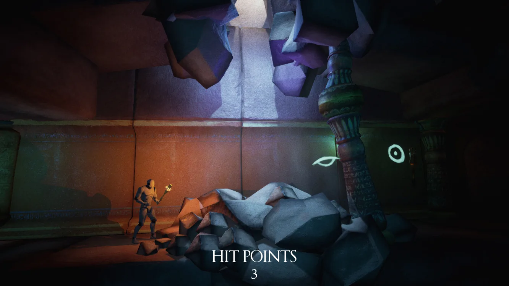
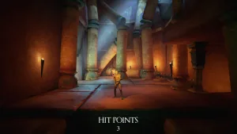
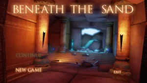
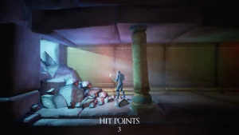
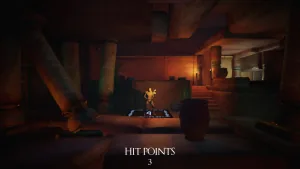
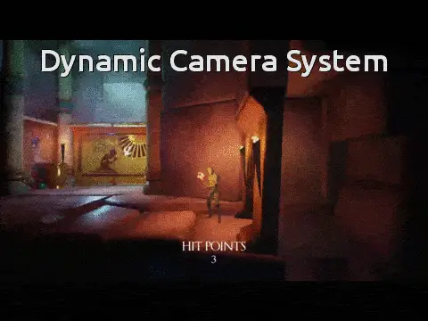
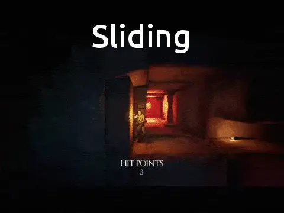
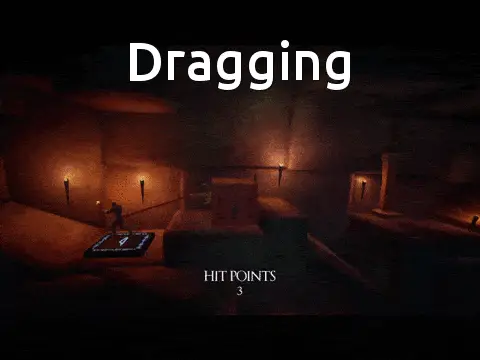
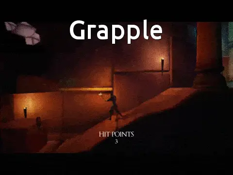
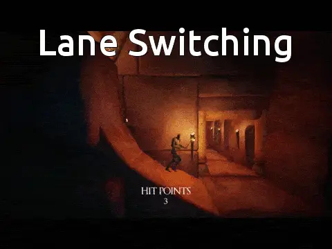

Beneath The Sand
- Year
- 2015
- Platform
- PC
- Engine
- Unreal Engine






Character abilities



Lane switching


A side scrolling adventure game. The player travels through a tomb, reliving the story of a Pharaoh in an innovative way, avoiding dangers and completing puzzles.
My role
I made Beneath The Sand with three fellow students during an internship at White Paper Games, where we were tasked with creating a small game in under three months. My role was scripting, but I worked in multiple areas, from art to level design.
What I did
- Scripted the game
- Designed a dynamic camera system with options for the designer
- Designed a lane switching system for a side scroller that keeps its two-axis feel
- Worked across art and level design
Dynamic camera system
The camera was not directly controlled by the player: it follows the player but could not be rotated or panned.
I designed a camera system that provides options for the designer. Three options were presented when switching cameras: Side Follow, Full Follow or Static Camera. Offset and the speed of the camera switch were also available as variables.
Lane switching
As the game is a side scroller you can't change depths, you're constrained to two axes. We wanted to keep that principle as well as an interactable change in depth.
When a lane switch has been activated, the player can only decide whether to move forward or backward, leaving an AI to calculate the path to the end lane point.
The player is able to switch the movement from forward to backward, but cannot stop altogether, preventing any errors from being in the wrong depth.